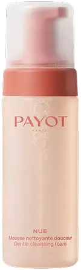

Закохані в красу: як створити образ мрії до Valentine's Day
Спецпроєкт Viva! та Brocard — б’юті-інструкція з підготовки до свята для жінок і чоловіків
Для неї
Для нього
Valentine's Day —
це ідеальний привід потішити себе та свою кохану людину приголомшливим образом, сповненим любові, ніжності й шарму. Разом із Brocard ми підготували покрокові гіди, які допоможуть створити довершений романтичний образ — від догляду за шкірою до вибору парфумів, що залишать незабутнє враження.
До речі, у Brocard триває святкова акція:
до 14 лютого у мобільному застосунку, на сайті та в магазинах мережі Brocard отримайте знижку -30% на улюблені товари та
підготуйтеся до Дня закоханих із задоволенням!
Для жінок: створюємо витончений романтичний образ
Крок 1: Догляд за шкірою. Сяйво любові
Ідеальний образ починається з доглянутої шкіри. Свіжа, зволожена, наповнена сяйвом, вона стає найкращою основою для
макіяжу та головною окрасою жіночої впевненості.

Payot Nue Gentle Cleansing Foam
Почніть з очищення: ніжна пінка для вмивання Payot Nue Gentle Cleansing Foam забезпечить м'яке очищення, залишаючи шкіру
оксамитовою. Під час контакту з вологою шкірою легкий мус перетворюється на пишну піну. Вона делікатно видаляє всі
забруднення та макіяж, не порушуючи гідроліпідного балансу. Формула містить 95% натуральних інгредієнтів, серед яких
міцели натурального походження, екстракт крес-салату та вода квітів апельсина.